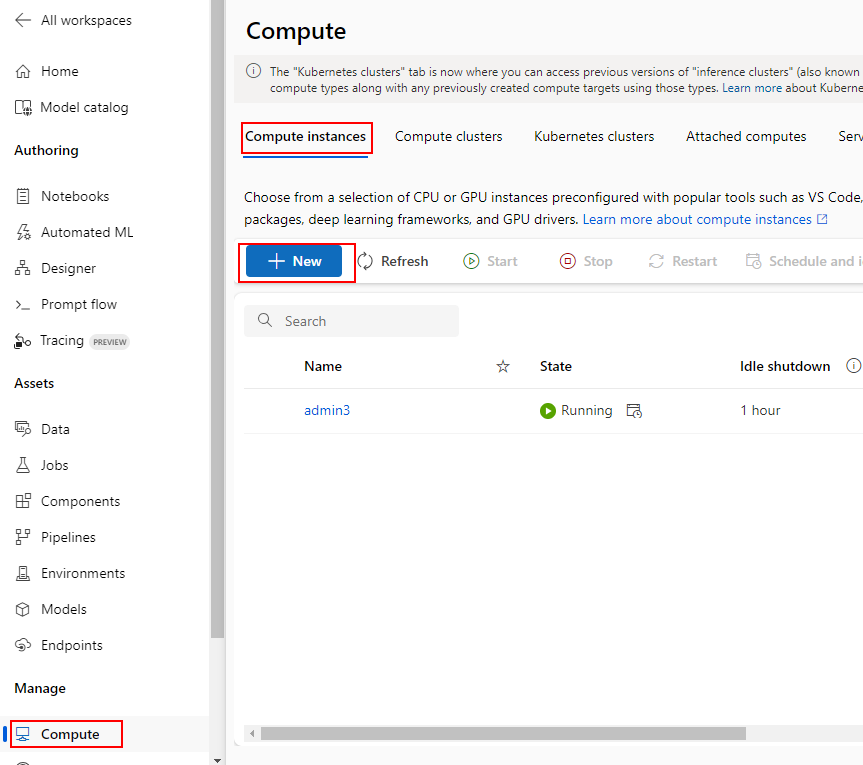
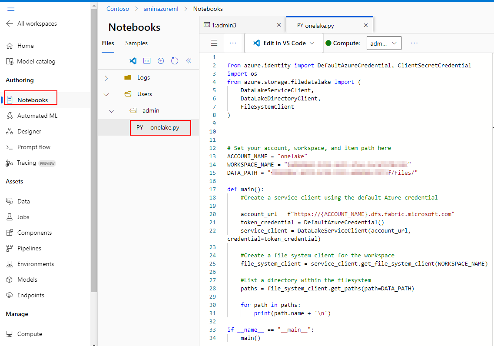
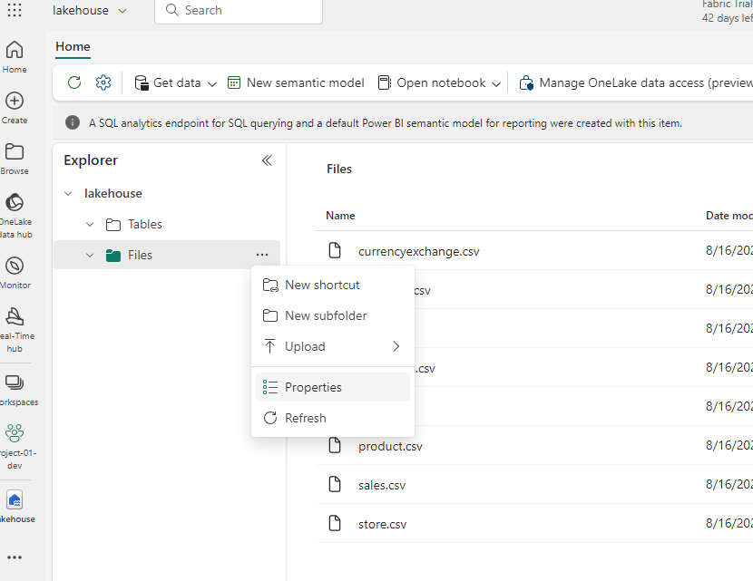
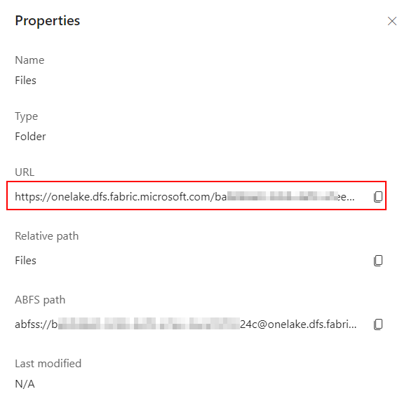
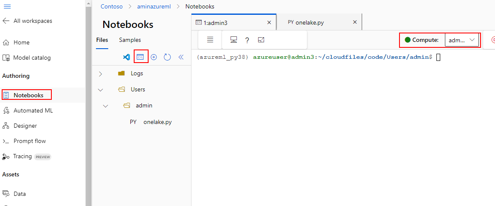
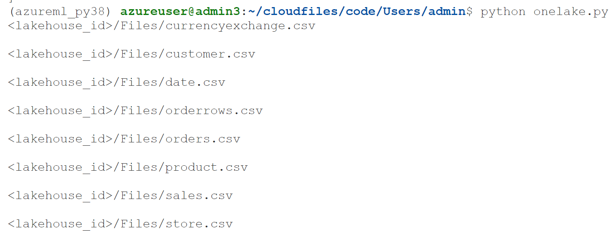

Connecting Azure Machine Learning to Fabric OneLake
Here is a workaround to access data from OneLake in Azure ML.
It uses Python and Notebooks to read data from OneLake.
-
Create a compute instance

-
From Notebooks create a new .py file or .ipynb. Use the following code: https://learn.microsoft.com/en-us/fabric/onelake/onelake-access-python#sample

-
You can get "myWorkspace" and "myLakeHose" from the Lakehouse properties URL. The URL is formatted as follows: https://onelake.dfs.fabric.microsoft.com/myWorkspace/myLakehouse/Files


-
To run the code in Notebooks, open a terminal and attach it to your compute.

- In the command line. install Azure storage and Azure identity packages:
$pip install azure-storage-file-datalake azure-identity - Navigate to the location of your Python file: For example:
$cd ~/cloudfiles/code/Users/admin - The code uses Default credentials of the logged in user from the command line. Login using using:
$az login --identity - Make sure the logged in user has access to the files in the Fabric Lakehouse
- Run the Python file to list the files in the OneLake/Files directory:
$python ./onelake.py -
If it succeeds, you should see the files listed:
